Jowar, also known as sorghum, is a cereal crop that is widely grown for its grains. The process of Jowar growth can be divided into several stages:
1] Seed Selection and Planting: High-quality seeds are selected for planting, either by hand or using a mechanical planter. The seeds are planted in well-prepared soil, usually in rows.
2] Germination and Seedling Stage:
After planting, the Jowar seeds germinate and grow into seedlings. During this stage, the seedlings require adequate moisture, warmth, and nutrients to establish a strong root system and develop healthy leaves.
3] Vegetative Growth:
Once the Jowar plants have established a good root system, they focus on vegetative growth. The plants grow larger and develop more leaves and branches, which are important for photosynthesis and grain production. The plants are irrigated and fertilized regularly to promote healthy growth.
4] Flowering and Grain Formation:
After around 45-60 days of growth, the Jowar plants start to produce flowers. The flowers are pollinated either by wind or self-pollination. After pollination, the flowers develop into grains, which are enclosed in a spike-like panicle.
5] Grain Maturation and Harvesting:
The grains take around 90-120 days to mature, during which time the grains inside the panicle grow and develop. The panicles change color from green to brown, indicating that they are fully mature. Jowar is usually harvested by cutting the panicles from the plant and threshing them to separate the grains from the plant material.
6] Post-harvest Processing:
After harvesting, the grains are cleaned and sorted to remove any debris or damaged grains. The grains can be used for food, animal feed, or biofuel production.
Overall, the growth of Jowar involves a complex interplay of environmental factors such as temperature, moisture, and sunlight, as well as genetic factors that determine the plant's growth and development. Adequate water management, nutrient management, and pest control are crucial to ensure a healthy and productive crop.
తెలుగు
సొర్గుమ్ అని కూడా పిలువబడే జొన్న, దాని ధాన్యాల కోసం విస్తృతంగా పండించే తృణధాన్యాల పంట. జోవర్ పెరుగుదల ప్రక్రియను అనేక దశలుగా విభజించవచ్చు:
1] విత్తన ఎంపిక మరియు నాటడం: చేతితో లేదా మెకానికల్ ప్లాంటర్ని ఉపయోగించి నాటడానికి అధిక-నాణ్యత గల విత్తనాలను ఎంపిక చేస్తారు. విత్తనాలు బాగా తయారుచేసిన నేలలో, సాధారణంగా వరుసలలో పండిస్తారు.
2] అంకురోత్పత్తి మరియు మొలక దశ: నాటిన తరువాత, జొన్న గింజలు మొలకెత్తుతాయి మరియు మొలకలుగా పెరుగుతాయి. ఈ దశలో, బలమైన రూట్ వ్యవస్థను ఏర్పాటు చేయడానికి మరియు ఆరోగ్యకరమైన ఆకులను అభివృద్ధి చేయడానికి మొలకలకు తగినంత తేమ, వెచ్చదనం మరియు పోషకాలు అవసరం.
3] ఏపుగా పెరగడం: జొన్న మొక్కలు మంచి రూట్ వ్యవస్థను ఏర్పాటు చేసుకున్న తర్వాత, అవి ఏపుగా పెరగడంపై దృష్టి పెడతాయి. మొక్కలు పెద్దవిగా పెరుగుతాయి మరియు కిరణజన్య సంయోగక్రియ మరియు ధాన్యం ఉత్పత్తికి ముఖ్యమైన ఆకులు మరియు కొమ్మలను అభివృద్ధి చేస్తాయి. మొక్కలు ఆరోగ్యకరమైన పెరుగుదలను ప్రోత్సహించడానికి క్రమం తప్పకుండా నీటిపారుదల మరియు ఫలదీకరణం చేయబడతాయి.
4] పుష్పించే మరియు ధాన్యం ఏర్పడటం: దాదాపు 45-60 రోజుల పెరుగుదల తర్వాత, జొన్న మొక్కలు పుష్పాలను ఉత్పత్తి చేయడం ప్రారంభిస్తాయి. పువ్వులు గాలి లేదా స్వీయ-పరాగసంపర్కం ద్వారా పరాగసంపర్కం చేయబడతాయి. పరాగసంపర్కం తరువాత, పువ్వులు ధాన్యాలుగా అభివృద్ధి చెందుతాయి, ఇవి స్పైక్ లాంటి పానికిల్లో ఉంటాయి.
5] ధాన్యం పరిపక్వత మరియు హార్వెస్టింగ్: ధాన్యాలు పరిపక్వం చెందడానికి దాదాపు 90-120 రోజులు పడుతుంది, ఈ సమయంలో పానికిల్ లోపల ధాన్యాలు పెరుగుతాయి మరియు అభివృద్ధి చెందుతాయి. పానికిల్స్ ఆకుపచ్చ నుండి గోధుమ రంగులోకి మారుతాయి, అవి పూర్తిగా పరిపక్వం చెందాయని సూచిస్తున్నాయి. జొన్నను సాధారణంగా మొక్క నుండి కాయలను కత్తిరించి వాటిని నూర్పిడి చేయడం ద్వారా ధాన్యాలను మొక్కల పదార్థం నుండి వేరు చేయడం ద్వారా పండిస్తారు.
6] పంటకోత తర్వాత ప్రాసెసింగ్: పంట కోసిన తర్వాత, ధాన్యాలను శుభ్రం చేసి, ఏదైనా చెత్త లేదా దెబ్బతిన్న గింజలను తొలగించడానికి క్రమబద్ధీకరించబడతాయి. ధాన్యాలను ఆహారం, పశుగ్రాసం లేదా జీవ ఇంధన ఉత్పత్తికి ఉపయోగించవచ్చు.
మొత్తంమీద, జోవర్ యొక్క పెరుగుదల ఉష్ణోగ్రత, తేమ మరియు సూర్యకాంతి వంటి పర్యావరణ కారకాల సంక్లిష్ట పరస్పర చర్యను కలిగి ఉంటుంది, అలాగే మొక్క యొక్క పెరుగుదల మరియు అభివృద్ధిని నిర్ణయించే జన్యుపరమైన కారకాలు. ఆరోగ్యకరమైన మరియు ఉత్పాదక పంటను నిర్ధారించడానికి తగినంత నీటి నిర్వహణ, పోషకాల నిర్వహణ మరియు తెగులు నియంత్రణ చాలా ముఖ్యమైనవి.
వినండి
2. PADDY / 2.వరి
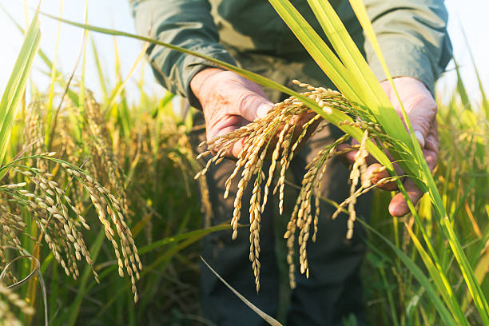
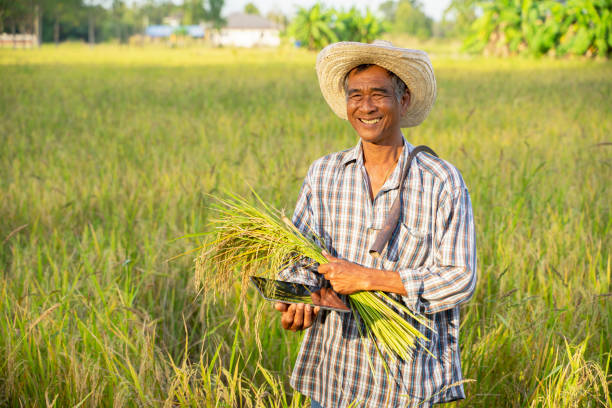
ENGLISH
Paddy, also known as rice, is an annual crop that is grown in warm and humid climates.
The process of paddy growth can be divided into several stages:
1] Seedling Stage:
Paddy seeds are soaked in water for a period of time to initiate germination. Once the seeds start to sprout, they are planted in nurseries to grow into seedlings. During this stage, the seedlings are grown in a wet and shady environment, and they are watered regularly.
2] Vegetative Stage:
Once the seedlings are around 20 to 30 days old, they are transplanted into the paddy field. During this stage, the paddy plant grows vegetatively, which means it focuses on developing its leaves and stems. The plants are irrigated regularly, and nutrients are added to the soil to support healthy growth.
3] Reproductive Stage:
After around 60 to 70 days of growth, the paddy plant enters the reproductive stage. The plant produces a stalk, and small flowers known as spikelets emerge. Pollination occurs when pollen from the male organs of the flower reaches the female organs, leading to the formation of rice grains.
4] Grain Filling Stage:
Once the rice grains are formed, they begin to fill with starch, protein, and other nutrients. During this stage, the paddy plant diverts its energy towards the grains, and the grains start to grow and mature.
5] Harvesting Stage:
The paddy crop is harvested when the grains are fully mature and have turned yellow or brown. The crop can be harvested manually by cutting the plants with a sickle or mechanically using a combine harvester. After harvesting, the grains are threshed to remove the husk and other impurities.
Overall, the growth of paddy involves a complex interplay of environmental factors such as temperature, moisture, and sunlight, as well as genetic factors that determine the plant's growth and development. Adequate water management, nutrient management, and pest control are crucial to ensure a healthy and productive paddy crop.
తెలుగు
వరిని పెడి అని కూడా పిలుస్తారు, ఇది వెచ్చని మరియు తేమతో కూడిన వాతావరణంలో పండించే వార్షిక పంట. వరి పెరుగుదల ప్రక్రియను అనేక దశలుగా విభజించవచ్చు:
1] మొలక దశ: మొలకెత్తడానికి వరి గింజలను కొంత కాలం పాటు నీటిలో నానబెట్టాలి. విత్తనాలు మొలకెత్తడం ప్రారంభించిన తర్వాత, వాటిని మొక్కలుగా పెరగడానికి నర్సరీలలో నాటారు. ఈ దశలో, మొలకల తడి మరియు నీడ ఉన్న వాతావరణంలో పెరుగుతాయి మరియు అవి క్రమం తప్పకుండా నీరు కారిపోతాయి.
2] ఏపుగా పెరిగే దశ: నారు 20 నుండి 30 రోజుల వయస్సు వచ్చిన తర్వాత, వాటిని వరి పొలంలో నాటుతారు. ఈ దశలో, వరి మొక్క ఏపుగా పెరుగుతుంది, అంటే దాని ఆకులు మరియు కాండం అభివృద్ధిపై దృష్టి పెడుతుంది. మొక్కలు క్రమం తప్పకుండా నీటిపారుదల, మరియు పోషకాలు ఆరోగ్యకరమైన పెరుగుదలకు మద్దతుగా మట్టికి జోడించబడతాయి.
3] పునరుత్పత్తి దశ: దాదాపు 60 నుండి 70 రోజుల ఎదుగుదల తర్వాత, వరి మొక్క పునరుత్పత్తి దశలోకి ప్రవేశిస్తుంది. మొక్క ఒక కొమ్మను ఉత్పత్తి చేస్తుంది మరియు స్పైక్లెట్స్ అని పిలువబడే చిన్న పువ్వులు ఉద్భవించాయి. పువ్వు యొక్క మగ అవయవాల నుండి పుప్పొడి స్త్రీ అవయవాలకు చేరినప్పుడు పరాగసంపర్కం సంభవిస్తుంది, ఇది బియ్యం గింజలు ఏర్పడటానికి దారితీస్తుంది.
4] ధాన్యం నింపే దశ: బియ్యం గింజలు ఏర్పడిన తర్వాత, అవి స్టార్చ్, ప్రోటీన్ మరియు ఇతర పోషకాలతో నింపడం ప్రారంభిస్తాయి. ఈ దశలో, వరి మొక్క తన శక్తిని గింజల వైపు మళ్లిస్తుంది మరియు గింజలు పెరుగుతాయి మరియు పరిపక్వం చెందుతాయి.
5] కోత దశ: గింజలు పూర్తిగా పక్వానికి వచ్చి పసుపు లేదా గోధుమ రంగులోకి మారినప్పుడు వరి పంట కోతకు వస్తుంది. మొక్కలను కొడవలితో కత్తిరించడం ద్వారా లేదా యాంత్రికంగా కంబైన్ హార్వెస్టర్ని ఉపయోగించి పంటను చేతితో పండించవచ్చు. పంట కోసిన తరువాత, పొట్టు మరియు ఇతర మలినాలను తొలగించడానికి గింజలను నూర్పిడి చేస్తారు.
మొత్తంమీద, వరి ఎదుగుదలలో ఉష్ణోగ్రత, తేమ మరియు సూర్యకాంతి వంటి పర్యావరణ కారకాల సంక్లిష్ట పరస్పర చర్య, అలాగే మొక్క యొక్క పెరుగుదల మరియు అభివృద్ధిని నిర్ణయించే జన్యుపరమైన అంశాలు ఉంటాయి. ఆరోగ్యకరమైన మరియు ఉత్పాదకమైన వరి పంటను నిర్ధారించడానికి తగినంత నీటి నిర్వహణ, పోషకాల నిర్వహణ మరియు తెగులు నియంత్రణ చాలా కీలకం.
వినండి
3. COTTON / 3.పత్తి
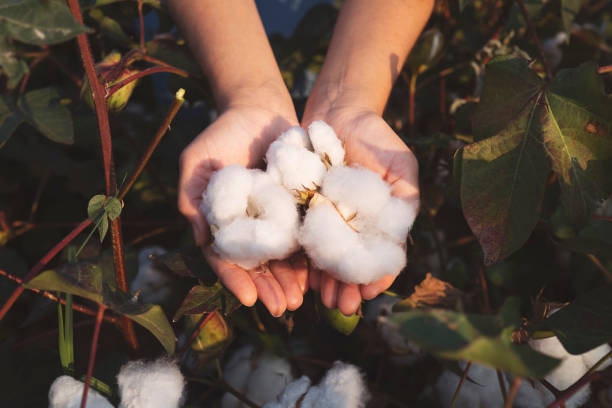
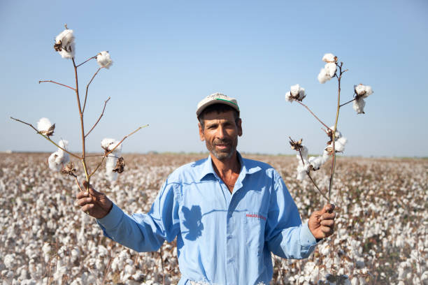
ENGLISH
Cotton is a major crop that is grown for its fibers, which are used in the textile industry.
The process of cotton growth can be divided into several stages:
1] Planting:
Cotton is typically planted as a seed in well-prepared soil, either by hand or by using a mechanical planter. The seeds are planted in rows, and the soil is carefully irrigated to ensure that the seeds germinate.
2] Germination and Seedling Stage:
After planting, the cotton seeds germinate and grow into seedlings. During this stage, the seedlings require adequate moisture, warmth, and nutrients to establish a strong root system and develop healthy leaves.
3] Vegetative Growth:
Once the cotton plants have established a good root system, they focus on vegetative growth. The plants grow larger and develop more leaves and branches, which are important for photosynthesis and fiber production. The plants are irrigated and fertilized regularly to promote healthy growth.
4] Flowering and Fruit Formation:
After around 6-8 weeks of growth, the cotton plants start to produce flowers. The flowers are pollinated either by bees or self-pollination. After pollination, the flowers develop into bolls, which contain the cotton fibers.
5] Boll Maturation:
The bolls take several weeks to mature, during which time the fibers inside the bolls grow and develop. The bolls change color from green to yellow, and eventually to brown, indicating that the fibers inside are fully mature.
6] Harvesting:
Cotton is harvested by either hand or by using a mechanical picker. The cotton fibers are separated from the seeds and other plant material, and then cleaned and processed to produce raw cotton. The raw cotton is then spun into yarn or thread, which is used to make textiles.
Overall, the growth of cotton involves a complex interplay of environmental factors such as temperature, moisture, and sunlight, as well as genetic factors that determine the plant's growth and development. Adequate water management, nutrient management, and pest control are crucial to ensure a healthy and productive cotton crop.
తెలుగు
పత్తి దాని ఫైబర్స్ కోసం పండించే ప్రధాన పంట, ఇది వస్త్ర పరిశ్రమలో ఉపయోగించబడుతుంది. పత్తి పెరుగుదల ప్రక్రియను అనేక దశలుగా విభజించవచ్చు:
1] నాటడం: పత్తిని సాధారణంగా చేతితో లేదా మెకానికల్ ప్లాంటర్ ఉపయోగించి బాగా తయారుచేసిన మట్టిలో విత్తనంగా నాటుతారు. విత్తనాలు వరుసలలో నాటబడతాయి మరియు విత్తనాలు మొలకెత్తేలా చూసేందుకు నేల జాగ్రత్తగా నీటిపారుదల చేయబడుతుంది.
2] అంకురోత్పత్తి మరియు మొలక దశ: నాటిన తరువాత, పత్తి విత్తనాలు మొలకెత్తుతాయి మరియు మొలకలుగా పెరుగుతాయి. ఈ దశలో, బలమైన రూట్ వ్యవస్థను ఏర్పాటు చేయడానికి మరియు ఆరోగ్యకరమైన ఆకులను అభివృద్ధి చేయడానికి మొలకలకు తగినంత తేమ, వెచ్చదనం మరియు పోషకాలు అవసరం.
3] ఏపుగా పెరగడం: పత్తి మొక్కలు మంచి రూట్ వ్యవస్థను ఏర్పాటు చేసుకున్న తర్వాత, అవి ఏపుగా పెరగడంపై దృష్టి పెడతాయి. మొక్కలు పెద్దవిగా పెరుగుతాయి మరియు కిరణజన్య సంయోగక్రియ మరియు ఫైబర్ ఉత్పత్తికి ముఖ్యమైన ఆకులు మరియు కొమ్మలను అభివృద్ధి చేస్తాయి. మొక్కలు ఆరోగ్యకరమైన పెరుగుదలను ప్రోత్సహించడానికి క్రమం తప్పకుండా నీటిపారుదల మరియు ఫలదీకరణం చేయబడతాయి.
4] పుష్పించే మరియు పండ్ల నిర్మాణం: సుమారు 6-8 వారాల పెరుగుదల తర్వాత, పత్తి మొక్కలు పుష్పాలను ఉత్పత్తి చేయడం ప్రారంభిస్తాయి. పువ్వులు తేనెటీగలు లేదా స్వీయ-పరాగసంపర్కం ద్వారా పరాగసంపర్కం చేయబడతాయి. పరాగసంపర్కం తరువాత, పువ్వులు కాటన్ ఫైబర్లను కలిగి ఉన్న బోల్స్గా అభివృద్ధి చెందుతాయి.
5] బోల్ పరిపక్వత: బోల్స్ పరిపక్వం చెందడానికి చాలా వారాలు పడుతుంది, ఈ సమయంలో బోల్స్ లోపల ఫైబర్స్ పెరుగుతాయి మరియు అభివృద్ధి చెందుతాయి. బోల్స్ రంగును ఆకుపచ్చ నుండి పసుపు రంగులోకి మారుస్తాయి మరియు చివరికి గోధుమ రంగులోకి మారుతాయి, ఇది లోపల ఉన్న ఫైబర్లు పూర్తిగా పరిపక్వం చెందాయని సూచిస్తుంది.
6] హార్వెస్టింగ్: పత్తిని చేతితో లేదా మెకానికల్ పికర్ ఉపయోగించి పండిస్తారు. పత్తి ఫైబర్లను విత్తనాలు మరియు ఇతర మొక్కల పదార్థాల నుండి వేరు చేసి, ఆపై శుభ్రం చేసి ముడి పత్తిని ఉత్పత్తి చేయడానికి ప్రాసెస్ చేస్తారు. ముడి పత్తిని నూలు లేదా దారంలో తిప్పుతారు, దీనిని వస్త్రాలను తయారు చేయడానికి ఉపయోగిస్తారు.
మొత్తంమీద, పత్తి పెరుగుదలలో ఉష్ణోగ్రత, తేమ మరియు సూర్యకాంతి వంటి పర్యావరణ కారకాల సంక్లిష్ట పరస్పర చర్య, అలాగే మొక్క యొక్క పెరుగుదల మరియు అభివృద్ధిని నిర్ణయించే జన్యుపరమైన కారకాలు ఉంటాయి. ఆరోగ్యకరమైన మరియు ఉత్పాదక పత్తి పంటను నిర్ధారించడానికి తగినంత నీటి నిర్వహణ, పోషకాల నిర్వహణ మరియు తెగులు నియంత్రణ చాలా కీలకం.
వినండి
4. WHEAT / 4.గోధుమ
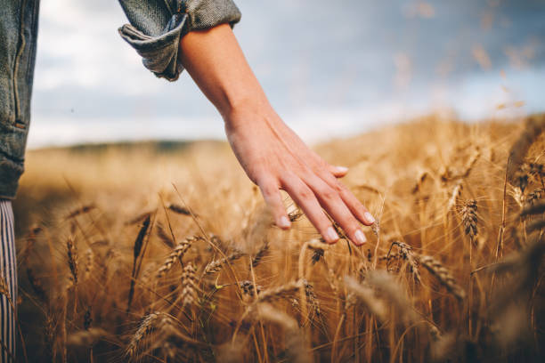
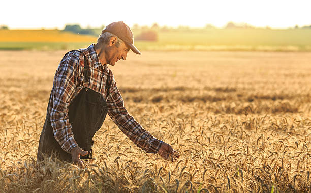
ENGLISH
Wheat is an annual grass plant that is cultivated for its edible grains. The process of wheat growth can be divided into several stages:
1] Seed Germination:
Wheat seeds are sown in the soil, and with the help of water and warmth, they start to sprout. The seedling emerges from the seed and develops roots and shoots.
2] Vegetative Growth:
During this stage, the wheat plant grows vegetatively, which means it focuses on developing its stems, leaves, and roots. The leaves of the plant absorb sunlight and convert it into energy through the process of photosynthesis, which is used to produce new cells and tissues.
3] Reproductive Growth:
This stage begins when the wheat plant reaches maturity, which usually takes around 100 to 120 days after planting. The plant starts to produce flowers, which contain male and female reproductive organs. Pollination occurs when pollen from the male organ reaches the female organ, leading to the formation of the wheat grain.
4] Grain Development:
Once the wheat grain is formed, it begins to develop. The plant diverts its energy towards the grain, and it begins to grow and fill with starch, protein, and other nutrients. As the grain matures, it turns from green to yellow, and the plant begins to dry up.
5] Harvest:
The wheat crop is harvested when the grain is fully mature and has dried out. The wheat plants are cut down and separated from the grain using a machine called a combine harvester. The grains are then threshed to remove the chaff and other impurities.
Overall, the growth of wheat involves a complex interplay of environmental factors such as soil quality, temperature, moisture, and sunlight, as well as genetic factors that determine the plant's growth and development.
తెలుగు
గోధుమ అనేది వార్షిక గడ్డి మొక్క, దీనిని తినదగిన ధాన్యాల కోసం పండిస్తారు. గోధుమ పెరుగుదల ప్రక్రియను అనేక దశలుగా విభజించవచ్చు:
1] విత్తనాల అంకురోత్పత్తి: గోధుమ గింజలు నేలలో నాటబడతాయి మరియు నీరు మరియు వెచ్చదనం సహాయంతో అవి మొలకెత్తడం ప్రారంభిస్తాయి. విత్తనం నుండి మొలక ఉద్భవించి వేర్లు మరియు రెమ్మలను అభివృద్ధి చేస్తుంది.
2] ఏపుగా పెరుగుదల: ఈ దశలో, గోధుమ మొక్క ఏపుగా పెరుగుతుంది, అంటే దాని కాండం, ఆకులు మరియు మూలాలను అభివృద్ధి చేయడంపై దృష్టి పెడుతుంది. మొక్క యొక్క ఆకులు సూర్యరశ్మిని గ్రహించి కిరణజన్య సంయోగక్రియ ప్రక్రియ ద్వారా శక్తిగా మారుస్తాయి, ఇది కొత్త కణాలు మరియు కణజాలాలను ఉత్పత్తి చేయడానికి ఉపయోగించబడుతుంది.
3] పునరుత్పత్తి పెరుగుదల: గోధుమ మొక్క పరిపక్వతకు చేరుకున్నప్పుడు ఈ దశ ప్రారంభమవుతుంది, ఇది సాధారణంగా నాటిన తర్వాత 100 నుండి 120 రోజులు పడుతుంది. మొక్క పుష్పాలను ఉత్పత్తి చేయడం ప్రారంభిస్తుంది, ఇందులో మగ మరియు ఆడ పునరుత్పత్తి అవయవాలు ఉంటాయి. మగ అవయవం నుండి పుప్పొడి స్త్రీ అవయవానికి చేరినప్పుడు పరాగసంపర్కం సంభవిస్తుంది, ఇది గోధుమ ధాన్యం ఏర్పడటానికి దారితీస్తుంది.
4] ధాన్యం అభివృద్ధి: గోధుమ ధాన్యం ఏర్పడిన తర్వాత, అది అభివృద్ధి చెందడం ప్రారంభమవుతుంది. మొక్క దాని శక్తిని ధాన్యం వైపు మళ్లిస్తుంది మరియు అది స్టార్చ్, ప్రోటీన్ మరియు ఇతర పోషకాలతో పెరగడం మరియు నింపడం ప్రారంభమవుతుంది. ధాన్యం పరిపక్వం చెందుతున్నప్పుడు, అది ఆకుపచ్చ నుండి పసుపు రంగులోకి మారుతుంది మరియు మొక్క ఎండిపోతుంది.
5] కోత: గోధుమ పంట ధాన్యం పూర్తిగా పక్వానికి వచ్చి ఎండిపోయినప్పుడు పండిస్తారు. కంబైన్ హార్వెస్టర్ అనే యంత్రాన్ని ఉపయోగించి గోధుమ మొక్కలను నరికి ధాన్యం నుండి వేరు చేస్తారు. ఆ తర్వాత ధాన్యాలను నూర్పిడి చేయడం ద్వారా గడ్డి మరియు ఇతర మలినాలను తొలగిస్తారు.
మొత్తంమీద, గోధుమల పెరుగుదల నేల నాణ్యత, ఉష్ణోగ్రత, తేమ మరియు సూర్యకాంతి వంటి పర్యావరణ కారకాల సంక్లిష్ట పరస్పర చర్యను కలిగి ఉంటుంది, అలాగే మొక్క యొక్క పెరుగుదల మరియు అభివృద్ధిని నిర్ణయించే జన్యుపరమైన కారకాలు.
వినండి
5. MAIZE / 5.మొక్కజొన్న
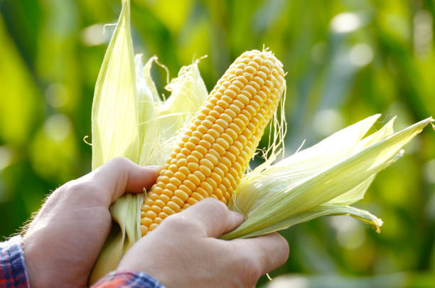
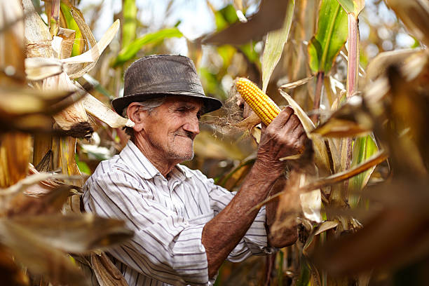
ENGLISH
Maize, also known as corn, is a staple crop in many parts of the world. The growing mechanism of maize involves several stages, from planting to harvesting. Here is a brief overview of the maize growing mechanism:
1] Soil preparation:
Maize grows best in well-drained soil with a pH of 6.0-7.5. The soil should be tilled to a depth of 6-8 inches and any weeds or rocks removed.
2] Planting:
Maize is usually planted in the spring, after the danger of frost has passed. The seeds should be planted 1-2 inches deep, in rows that are 30-36 inches apart.
3] Germination:
The maize seed will germinate within 7-10 days, provided the soil is moist and the temperature is warm enough. The seed will send out a small root and a shoot, which will eventually grow into the maize plant.
4] Growth:
The maize plant will continue to grow, developing leaves and stalks. It will also begin to produce tassels and ears.
5] Pollination:
The tassels at the top of the plant contain the male flowers, while the ears contain the female flowers. Pollination occurs when the pollen from the tassels falls onto the silks of the ears.
6] Ear development:
Once the ears have been pollinated, they will begin to develop kernels. Each kernel is attached to a silk, which eventually dries up and falls off.
7] Harvesting:
Maize is typically harvested in the fall, when the ears are fully mature and the stalks and leaves have turned brown. The ears are harvested by hand or by using a mechanical harvester.
Overall, the maize growing mechanism involves careful soil preparation, planting at the right time, and ensuring the right conditions for germination, growth, pollination, and ear development.
తెలుగు
మేజ్ అని కూడా పిలువబడే మొక్కజొన్న, ప్రపంచంలోని అనేక ప్రాంతాలలో ప్రధానమైన పంట. మొక్కజొన్న యొక్క పెరుగుతున్న విధానం నాటడం నుండి కోత వరకు అనేక దశలను కలిగి ఉంటుంది. మొక్కజొన్న సాగు విధానం యొక్క సంక్షిప్త అవలోకనం ఇక్కడ ఉంది:
1] నేల తయారీ: 6.0-7.5 pHతో బాగా ఎండిపోయిన నేలలో మొక్కజొన్న బాగా పెరుగుతుంది. మట్టిని 6-8 అంగుళాల లోతు వరకు దున్నాలి మరియు ఏవైనా కలుపు మొక్కలు లేదా రాళ్లను తొలగించాలి.
2] నాటడం: మొక్కజొన్న సాధారణంగా వసంతకాలంలో పండిస్తారు, మంచు ప్రమాదం దాటిన తర్వాత. విత్తనాలను 1-2 అంగుళాల లోతులో, 30-36 అంగుళాల దూరంలో ఉన్న వరుసలలో నాటాలి.
3] అంకురోత్పత్తి: మొక్కజొన్న విత్తనాలు 7-10 రోజులలో మొలకెత్తుతాయి, నేల తేమగా మరియు ఉష్ణోగ్రత తగినంతగా ఉంటే. విత్తనం ఒక చిన్న రూట్ మరియు రెమ్మను పంపుతుంది, ఇది చివరికి మొక్కజొన్న మొక్కగా పెరుగుతుంది.
4] పెరుగుదల: మొక్కజొన్న మొక్క పెరుగుతూనే ఉంటుంది, ఆకులు మరియు కాండాలను అభివృద్ధి చేస్తుంది. ఇది కూడా tassels మరియు చెవులు ఉత్పత్తి ప్రారంభమవుతుంది.
5] పరాగసంపర్కం : మొక్క పైభాగంలో ఉన్న టాసెల్స్లో మగ పువ్వులు ఉంటాయి, చెవుల్లో ఆడ పువ్వులు ఉంటాయి. టసెల్స్ నుండి పుప్పొడి చెవుల పట్టుపై పడినప్పుడు పరాగసంపర్కం జరుగుతుంది.
6] చెవి అభివృద్ధి: చెవులు పరాగసంపర్కం జరిగిన తర్వాత, అవి కెర్నలు అభివృద్ధి చెందడం ప్రారంభిస్తాయి. ప్రతి కెర్నల్ ఒక పట్టుకు జోడించబడి ఉంటుంది, ఇది చివరికి ఎండిపోయి పడిపోతుంది.
7] హార్వెస్టింగ్: మొక్కజొన్న సాధారణంగా శరదృతువులో పండిస్తారు, చెవులు పూర్తిగా పరిపక్వం చెందినప్పుడు మరియు కాండాలు మరియు ఆకులు గోధుమ రంగులోకి మారుతాయి. చెవులను చేతితో లేదా యాంత్రిక హార్వెస్టర్ ఉపయోగించి పండిస్తారు.
మొత్తంమీద, మొక్కజొన్న సాగు విధానంలో జాగ్రత్తగా నేల తయారీ, సరైన సమయంలో నాటడం మరియు అంకురోత్పత్తి, పెరుగుదల, పరాగసంపర్కం మరియు చెవి అభివృద్ధికి సరైన పరిస్థితులను నిర్ధారించడం వంటివి ఉంటాయి.
వినండి
6. CHILLI / 6.మిరపకాయ
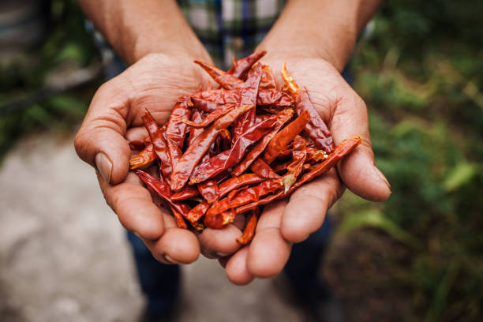
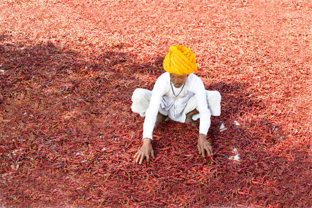
ENGLISH
Chilli, also known as pepper, is a crop that is grown for its fruits, which are used as a spice in many cuisines. The process of chilli growth can be divided into several stages:
1] Seedling Stage:
Chilli seeds are sown in a seedbed or small pots filled with well-draining soil. The seeds are covered with a thin layer of soil and watered lightly. The seedlings emerge within a few days, and they are kept in a warm and humid environment with plenty of light.
2] Transplanting:
Once the chilli seedlings are around 4-6 weeks old and have developed 4-6 true leaves, they are ready to be transplanted to the field. The seedlings are transplanted to the main field or greenhouse, where they are spaced out evenly and provided with adequate water and nutrients.
3] Vegetative Growth:
During the vegetative growth stage, the chilli plant focuses on developing leaves, stems, and roots. The plants require ample sunlight, water, and nutrients, and they are fertilized with a balanced fertilizer regularly. The plants are also pruned to promote branching and increase yields.
4] Flowering and Fruit Formation:
After around 50-60 days of growth, the chilli plants start to flower. The flowers are pollinated either by bees or self-pollination. Once the flowers are fertilized, the fruit starts to develop. The fruit grows and matures over several weeks, changing color from green to red or other colors depending on the variety.
5] Harvesting:
Chilli fruits are harvested when they have fully matured and changed color. The fruits are carefully picked by hand or harvested using a machine. After harvesting, the fruits are washed, dried, and sorted.
Overall, the growth of chilli involves a complex interplay of environmental factors such as temperature, moisture, and sunlight, as well as genetic factors that determine the plant's growth and development. Adequate water management, nutrient management, and pest control are crucial to ensure a healthy and productive chilli crop.
తెలుగు
మిరపకాయ, చిల్లి అని కూడా పిలుస్తారు, దాని పండ్ల కోసం పండించే పంట, దీనిని అనేక వంటకాల్లో సుగంధ ద్రవ్యంగా ఉపయోగిస్తారు. మిరపకాయ పెరుగుదల ప్రక్రియను అనేక దశలుగా విభజించవచ్చు:
1] మొలకల దశ: మిరప గింజలను విత్తన గడ్డలో లేదా బాగా ఎండిపోయే మట్టితో నింపిన చిన్న కుండలలో విత్తుతారు. విత్తనాలు నేల యొక్క పలుచని పొరతో కప్పబడి తేలికగా నీరు కారిపోతాయి. మొలకల కొద్ది రోజుల్లోనే ఉద్భవించాయి మరియు అవి వెచ్చగా మరియు తేమతో కూడిన వాతావరణంలో పుష్కలంగా కాంతితో ఉంచబడతాయి.
2] నాటడం: మిరప మొలకలు 4-6 వారాల వయస్సులో ఉండి, 4-6 నిజమైన ఆకులను అభివృద్ధి చేసిన తర్వాత, అవి పొలంలో నాటడానికి సిద్ధంగా ఉన్నాయి. మొలకలని ప్రధాన పొలంలో లేదా గ్రీన్హౌస్లో నాటుతారు, అక్కడ అవి సమానంగా ఉంచబడతాయి మరియు తగినంత నీరు మరియు పోషకాలు అందించబడతాయి.
3] ఏపుగా ఎదుగుదల: ఏపుగా పెరిగే దశలో, మిరప మొక్క ఆకులు, కాండం మరియు మూలాలను అభివృద్ధి చేయడంపై దృష్టి పెడుతుంది. మొక్కలకు పుష్కలంగా సూర్యరశ్మి, నీరు మరియు పోషకాలు అవసరమవుతాయి మరియు అవి సమతుల్య ఎరువులతో క్రమం తప్పకుండా ఫలదీకరణం చేయబడతాయి. కొమ్మలను ప్రోత్సహించడానికి మరియు దిగుబడిని పెంచడానికి మొక్కలు కూడా కత్తిరించబడతాయి.
4] పుష్పించే మరియు పండ్ల నిర్మాణం: సుమారు 50-60 రోజుల తరువాత, మిరప మొక్కలు పుష్పించడం ప్రారంభిస్తాయి. పువ్వులు తేనెటీగలు లేదా స్వీయ-పరాగసంపర్కం ద్వారా పరాగసంపర్కం చేయబడతాయి. పువ్వులు ఫలదీకరణం చేసిన తర్వాత, పండు అభివృద్ధి చెందడం ప్రారంభమవుతుంది. పండు అనేక వారాల పాటు పెరుగుతుంది మరియు పరిపక్వం చెందుతుంది, రకాన్ని బట్టి ఆకుపచ్చ నుండి ఎరుపు లేదా ఇతర రంగులకు రంగును మారుస్తుంది.
5] హార్వెస్టింగ్: మిరప పండ్లు పూర్తిగా పరిపక్వం చెంది రంగు మారినప్పుడు పండిస్తారు. పండ్లు జాగ్రత్తగా చేతితో తీయబడతాయి లేదా యంత్రాన్ని ఉపయోగించి పండించబడతాయి. పండించిన తరువాత, పండ్లు కడుగుతారు, ఎండబెట్టి, క్రమబద్ధీకరించబడతాయి.
మొత్తంమీద, మిరప పెరుగుదలలో ఉష్ణోగ్రత, తేమ మరియు సూర్యకాంతి వంటి పర్యావరణ కారకాల సంక్లిష్ట పరస్పర చర్య, అలాగే మొక్క యొక్క పెరుగుదల మరియు అభివృద్ధిని నిర్ణయించే జన్యుపరమైన కారకాలు ఉంటాయి. ఆరోగ్యకరమైన మరియు ఉత్పాదక మిరప పంటను నిర్ధారించడానికి తగినంత నీటి నిర్వహణ, పోషకాల నిర్వహణ మరియు తెగులు నియంత్రణ చాలా ముఖ్యమైనవి.
వినండి
7. SUGERCANE / 7.చెరుకుగడ
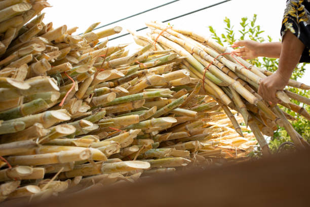
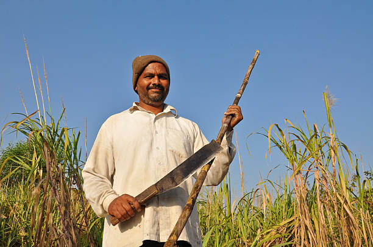
ENGLISH
Sugar cane is a tall perennial grass that is cultivated for its juice, which is used to make sugar and other products. The process of sugar cane growth can be divided into several stages:
1] Planting:
Sugar cane is propagated by planting stem cuttings, which are sections of the cane stalks. The cuttings are planted in well-prepared soil, typically in rows, and covered with soil.
2] Germination and Growth:
Within a few weeks, the stem cuttings sprout and grow into cane shoots. During this stage, the shoots focus on developing roots and leaves. The shoots are irrigated regularly, and nutrients are added to the soil to support healthy growth.
3] Tillering:
After the sugar cane plants have established a good root system, they start to produce additional shoots from the base of the stem. These shoots are called tillers, and they help to increase the plant's biomass.
4] Stalk Formation:
As the sugar cane plants continue to grow, the tillers develop into stalks. The stalks are the part of the plant that contains the juice that is used to make sugar. During this stage, the plants require ample water and nutrients to support healthy stalk growth.
5] Maturation:
The sugar cane plants reach maturity after about 9 to 18 months, depending on the variety and growing conditions. At this stage, the stalks turn from green to yellow, and the sugar content in the stalks reaches its peak. The plants are then ready for harvesting.
6] Harvesting:
Sugar cane is harvested by cutting the stalks close to the ground using a machete or a mechanical harvester. The stalks are then transported to a sugar mill, where they are crushed to extract the juice. The juice is then processed to produce sugar and other products.
Overall, the growth of sugar cane involves a complex interplay of environmental factors such as temperature, moisture, and sunlight, as well as genetic factors that determine the plant's growth and development. Adequate water management, nutrient management, and pest control are crucial to ensure a healthy and productive sugar cane crop.
తెలుగు
చెరకు అనేది పొడవైన శాశ్వత గడ్డి, దీనిని దాని రసం కోసం పండిస్తారు, దీనిని చక్కెర మరియు ఇతర ఉత్పత్తులను తయారు చేయడానికి ఉపయోగిస్తారు. చెరకు పెరుగుదల ప్రక్రియను అనేక దశలుగా విభజించవచ్చు:
1] నాటడం: చెరకు కాండాల విభాగాలైన కాండం కోతలను నాటడం ద్వారా చెరకును ప్రచారం చేస్తారు. కోతలను బాగా తయారుచేసిన మట్టిలో పండిస్తారు, సాధారణంగా వరుసలలో మరియు మట్టితో కప్పబడి ఉంటాయి.
2] అంకురోత్పత్తి మరియు పెరుగుదల: కొన్ని వారాలలో, కాండం కోతలు మొలకెత్తుతాయి మరియు చెరకు రెమ్మలుగా పెరుగుతాయి. ఈ దశలో, రెమ్మలు వేర్లు మరియు ఆకులను అభివృద్ధి చేయడంపై దృష్టి పెడతాయి. రెమ్మలు క్రమం తప్పకుండా నీటిపారుదల చేయబడతాయి మరియు ఆరోగ్యకరమైన పెరుగుదలకు మద్దతుగా పోషకాలు నేలకి జోడించబడతాయి.
3] టిల్లరింగ్: చెరకు మొక్కలు మంచి రూట్ వ్యవస్థను ఏర్పరచుకున్న తర్వాత, అవి కాండం యొక్క పునాది నుండి అదనపు రెమ్మలను ఉత్పత్తి చేయడం ప్రారంభిస్తాయి. ఈ రెమ్మలను టిల్లర్లు అని పిలుస్తారు మరియు అవి మొక్క యొక్క జీవపదార్థాన్ని పెంచడానికి సహాయపడతాయి.
4] కొమ్మ నిర్మాణం: చెరకు మొక్కలు పెరుగుతూనే ఉండటంతో, పైర్లు కాండాలుగా అభివృద్ధి చెందుతాయి. కాండాలు చక్కెరను తయారు చేయడానికి ఉపయోగించే రసాన్ని కలిగి ఉన్న మొక్క యొక్క భాగం. ఈ దశలో, మొక్కలు ఆరోగ్యకరమైన కొమ్మ పెరుగుదలకు తోడ్పడటానికి పుష్కలంగా నీరు మరియు పోషకాలు అవసరం.
5] పరిపక్వత: చెరకు మొక్కలు వివిధ మరియు పెరుగుతున్న పరిస్థితులను బట్టి సుమారు 9 నుండి 18 నెలల తర్వాత పరిపక్వతకు చేరుకుంటాయి. ఈ దశలో, కాడలు ఆకుపచ్చ నుండి పసుపు రంగులోకి మారుతాయి మరియు కాండాలలో చక్కెర కంటెంట్ గరిష్ట స్థాయికి చేరుకుంటుంది. అప్పుడు మొక్కలు కోతకు సిద్ధంగా ఉన్నాయి.
6] హార్వెస్టింగ్: కొడవలి లేదా మెకానికల్ హార్వెస్టర్ని ఉపయోగించి భూమికి దగ్గరగా ఉన్న కాండాలను కోయడం ద్వారా చెరకును పండిస్తారు. కాండాలను చక్కెర మిల్లుకు రవాణా చేస్తారు, అక్కడ రసం తీయడానికి వాటిని చూర్ణం చేస్తారు. అప్పుడు రసం చక్కెర మరియు ఇతర ఉత్పత్తులను ఉత్పత్తి చేయడానికి ప్రాసెస్ చేయబడుతుంది.
మొత్తంమీద, చెరకు పెరుగుదలలో ఉష్ణోగ్రత, తేమ మరియు సూర్యకాంతి వంటి పర్యావరణ కారకాల సంక్లిష్ట పరస్పర చర్య, అలాగే మొక్క యొక్క పెరుగుదల మరియు అభివృద్ధిని నిర్ణయించే జన్యుపరమైన కారకాలు ఉంటాయి. ఆరోగ్యకరమైన మరియు ఉత్పాదక చెరకు పంటను నిర్ధారించడానికి తగినంత నీటి నిర్వహణ, పోషకాల నిర్వహణ మరియు తెగులు నియంత్రణ చాలా కీలకం.
వినండి
8. GREEN GRAM / 8.పెసర
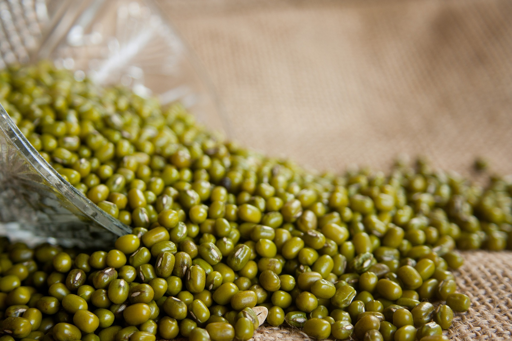
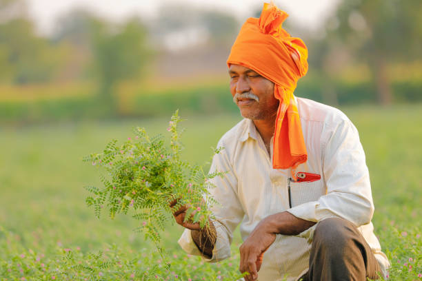
ENGLISH
Green gram, also known as mung bean, is a type of legume that is commonly grown for its nutritious seeds. Here are the basic steps involved in growing green gram:
1] Seed Selection and Planting:
High-quality green gram seeds are selected for planting, either by hand or using a mechanical planter. The seeds are planted in well-prepared soil, usually in rows or hills. The best time to plant green gram is during the warm months of the year.
2] Germination and Seedling Stage:
After planting, the green gram seeds germinate and grow into seedlings. During this stage, the seedlings require adequate moisture, warmth, and nutrients to establish a strong root system and develop healthy leaves. The plants should be watered regularly to keep the soil moist but not waterlogged.
3] Vegetative Growth:
Once the green gram plants have established a good root system, they focus on vegetative growth. The plants grow larger and develop more leaves and branches, which are important for photosynthesis and seed production. The plants are irrigated and fertilized regularly to promote healthy growth.
4] Flowering and Fruit Formation:
After around 60-90 days of growth, the green gram plants start to produce flowers. The flowers are self-pollinating and develop into pods, which contain the seeds.
5] Pod Maturation and Harvesting:
The pods take several weeks to mature, during which time the seeds inside the pods grow and develop. The pods change color from green to yellow or brown, indicating that they are fully mature. Green gram is usually harvested by hand, either by pulling the pods off the plant or cutting the entire plant.
6] Post-harvest Processing:
After harvesting, the pods are threshed to separate the seeds from the plant material. The seeds are then cleaned and sorted to remove any debris or damaged seeds.
తెలుగు
ముంగ్ బీన్ అని కూడా పిలువబడే గ్రీన్ గ్రామ్ ఒక రకమైన చిక్కుళ్ళు, దీనిని సాధారణంగా పోషకమైన విత్తనాల కోసం పండిస్తారు. పచ్చికూరను పండించడంలో ప్రాథమిక దశలు ఇక్కడ ఉన్నాయి:
1] విత్తన ఎంపిక మరియు నాటడం: అధిక-నాణ్యత గల పచ్చి శెనగ విత్తనాలను చేతితో లేదా మెకానికల్ ప్లాంటర్ ఉపయోగించి నాటడానికి ఎంపిక చేస్తారు. విత్తనాలు బాగా సిద్ధం చేయబడిన నేలలో, సాధారణంగా వరుసలు లేదా కొండలలో పండిస్తారు. పచ్చిమిర్చి నాటడానికి ఉత్తమ సమయం సంవత్సరంలో వెచ్చని నెలలు.
2] అంకురోత్పత్తి మరియు మొలక దశ: నాటిన తరువాత, పచ్చి శనగ విత్తనాలు మొలకెత్తుతాయి మరియు మొలకలుగా పెరుగుతాయి. ఈ దశలో, బలమైన రూట్ వ్యవస్థను ఏర్పాటు చేయడానికి మరియు ఆరోగ్యకరమైన ఆకులను అభివృద్ధి చేయడానికి మొలకలకు తగినంత తేమ, వెచ్చదనం మరియు పోషకాలు అవసరం. నేల తేమగా ఉండేలా మొక్కలకు క్రమం తప్పకుండా నీరు పెట్టాలి కాని నీరు నిలువకుండా ఉండాలి.
3] ఏపుగా పెరగడం: పచ్చి శనగ మొక్కలు మంచి రూట్ వ్యవస్థను ఏర్పాటు చేసుకున్న తర్వాత, అవి ఏపుగా పెరగడంపై దృష్టి పెడతాయి. మొక్కలు పెద్దవిగా పెరుగుతాయి మరియు కిరణజన్య సంయోగక్రియ మరియు విత్తనోత్పత్తికి ముఖ్యమైన ఆకులు మరియు కొమ్మలను అభివృద్ధి చేస్తాయి. మొక్కలు ఆరోగ్యకరమైన పెరుగుదలను ప్రోత్సహించడానికి క్రమం తప్పకుండా నీటిపారుదల మరియు ఫలదీకరణం చేయబడతాయి.
4] పుష్పించే మరియు పండ్ల నిర్మాణం: సుమారు 60-90 రోజుల పెరుగుదల తర్వాత, పచ్చి శనగ మొక్కలు పుష్పాలను ఉత్పత్తి చేయడం ప్రారంభిస్తాయి. పువ్వులు స్వీయ-పరాగసంపర్కం మరియు గింజలను కలిగి ఉన్న కాయలుగా అభివృద్ధి చెందుతాయి.
5] పాడ్ పరిపక్వత మరియు హార్వెస్టింగ్: కాయలు పరిపక్వం చెందడానికి చాలా వారాలు పడుతుంది, ఈ సమయంలో కాయల లోపల విత్తనాలు పెరుగుతాయి మరియు అభివృద్ధి చెందుతాయి. కాయలు ఆకుపచ్చ నుండి పసుపు లేదా గోధుమ రంగులోకి మారుతాయి, అవి పూర్తిగా పరిపక్వం చెందాయని సూచిస్తున్నాయి. పచ్చి శనగను సాధారణంగా చేతితో పండిస్తారు, మొక్క నుండి కాయలను లాగడం లేదా మొత్తం మొక్కను కత్తిరించడం ద్వారా.
6] పంటకోత తర్వాత ప్రాసెసింగ్: పంట కోసిన తర్వాత, మొక్కల పదార్థం నుండి విత్తనాలను వేరు చేయడానికి కాయలను నూర్పిడి చేస్తారు. విత్తనాలు ఏదైనా చెత్తను లేదా దెబ్బతిన్న విత్తనాలను తొలగించడానికి తర్వాత శుభ్రపరచబడతాయి మరియు క్రమబద్ధీకరించబడతాయి.
వినండి
9. SOYA BEAN / 9.సోయా బీన్
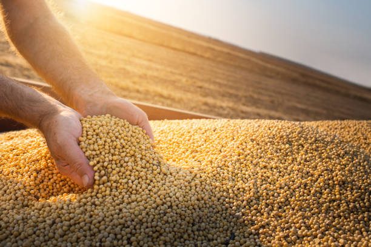
ENGLISH
Soybeans are typically grown as an annual crop, meaning they are planted each year and harvested in the fall. The following is a brief overview of the basic steps involved in growing soybeans:
1] Soil preparation:
Before planting, the soil must be properly prepared by tilling, fertilizing, and possibly applying herbicides to control weeds.
2] Planting:
Soybeans are planted in the spring after the soil has warmed up to a temperature of at least 50°F (10°C). They are usually planted in rows using a seed drill or planter.
3] Growing:
Once planted, the soybeans grow throughout the summer months. They require regular watering and may need additional fertilizer applications during this time.
4] Pest and weed control:
To prevent damage from pests and weeds, soybean farmers typically use a combination of cultural, biological, and chemical methods.
5] Harvesting:
Soybeans are typically harvested in the fall after they have fully matured. They can be harvested using a combine, which cuts and threshes the plants, separating the beans from the pods.
6] Storage and processing:
Once harvested, the soybeans may be stored for a period of time before being processed into various products such as soy milk, tofu, and soybean oil.
Overall, successful soybean production depends on careful management of soil, water, pests, and weeds throughout the growing season.
తెలుగు
సోయాబీన్స్ సాధారణంగా వార్షిక పంటగా పెరుగుతాయి, అనగా అవి ప్రతి సంవత్సరం నాటబడతాయి మరియు శరదృతువులో పండించబడతాయి. సోయాబీన్లను పెంచడంలో ప్రాథమిక దశల యొక్క సంక్షిప్త అవలోకనం క్రిందిది:
1] నేల తయారీ: నాటడానికి ముందు, కలుపు మొక్కలను నియంత్రించడానికి దున్నడం, ఎరువులు వేయడం మరియు హెర్బిసైడ్లను ఉపయోగించడం ద్వారా మట్టిని సరిగ్గా సిద్ధం చేయాలి.
2] నాటడం: నేల కనీసం 50°F (10°C) వరకు వేడెక్కిన తర్వాత వసంతకాలంలో సోయాబీన్లను పండిస్తారు. వాటిని సాధారణంగా సీడ్ డ్రిల్ లేదా ప్లాంటర్ ఉపయోగించి వరుసలలో పండిస్తారు.
3] పెరుగుతున్న: ఒకసారి నాటిన, సోయాబీన్స్ వేసవి నెలల్లో పెరుగుతాయి. వాటికి రెగ్యులర్ నీరు త్రాగుట అవసరం మరియు ఈ సమయంలో అదనపు ఎరువుల దరఖాస్తులు అవసరం కావచ్చు.
4] తెగులు మరియు కలుపు నియంత్రణ: తెగుళ్లు మరియు కలుపు మొక్కల నుండి నష్టాన్ని నివారించడానికి, సోయాబీన్ రైతులు సాధారణంగా సాంస్కృతిక, జీవ మరియు రసాయన పద్ధతుల కలయికను ఉపయోగిస్తారు.
5] హార్వెస్టింగ్: సోయాబీన్స్ పూర్తిగా పక్వానికి వచ్చిన తర్వాత సాధారణంగా శరదృతువులో పండించబడతాయి. వాటిని కలపడం ద్వారా పండించవచ్చు, ఇది మొక్కలను కత్తిరించి నూర్పిడి చేస్తుంది, గింజలను గింజల నుండి వేరు చేస్తుంది.
6] నిల్వ మరియు ప్రాసెసింగ్: ఒకసారి పండించిన తర్వాత, సోయాబీన్లను సోయా పాలు, టోఫు మరియు సోయాబీన్ నూనె వంటి వివిధ ఉత్పత్తులలో ప్రాసెస్ చేయడానికి ముందు కొంత కాలం పాటు నిల్వ చేయవచ్చు.
మొత్తంమీద, విజయవంతమైన సోయాబీన్ ఉత్పత్తి పెరుగుతున్న కాలంలో నేల, నీరు, తెగుళ్లు మరియు కలుపు మొక్కలను జాగ్రత్తగా నిర్వహించడంపై ఆధారపడి ఉంటుంది.
వినండి
10. BENGAL GRAM / 10.శెనగలు
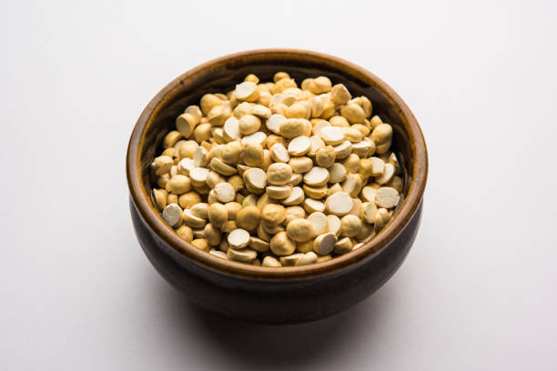
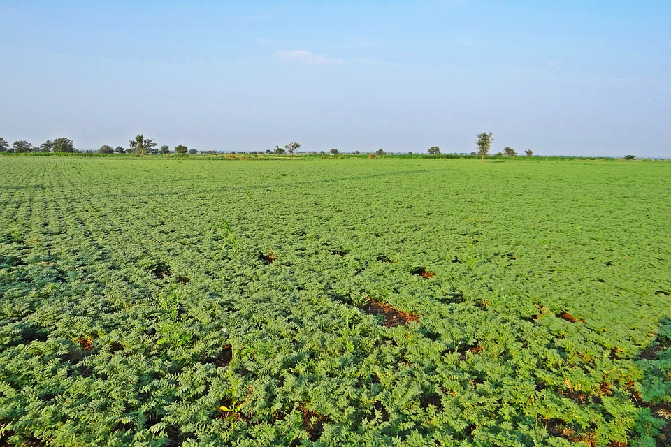
ENGLISH
Bengalgram, also known as chickpea, is a legume crop that is widely grown for its nutritious seeds. The process of Bengalgram growth can be divided into several stages:
1] Seed Selection and Planting:
High-quality seeds are selected for planting, either by hand or using a mechanical planter. The seeds are planted in well-prepared soil, usually in rows or hills.
2] Germination and Seedling Stage:
After planting, the Bengalgram seeds germinate and grow into seedlings. During this stage, the seedlings require adequate moisture, warmth, and nutrients to establish a strong root system and develop healthy leaves.
3] Vegetative Growth:
Once the Bengalgram plants have established a good root system, they focus on vegetative growth. The plants grow larger and develop more leaves and branches, which are important for photosynthesis and seed production. The plants are irrigated and fertilized regularly to promote healthy growth.
4] Flowering and Fruit Formation:
After around 8-10 weeks of growth, the Bengalgram plants start to produce flowers. The flowers are pollinated either by bees or self-pollination. After pollination, the flowers develop into pods, which contain the seeds.
5] Pod Maturation and Harvesting:
The pods take several weeks to mature, during which time the seeds inside the pods grow and develop. The pods change color from green to yellow, and eventually to brown, indicating that they are fully mature. Bengalgram is usually harvested by hand, either by pulling the pods off the plant or cutting the entire plant.
6] Post-harvest Processing:
After harvesting, the pods are threshed to separate the seeds from the plant material. The seeds are then cleaned and sorted to remove any debris or damaged seeds.
Overall, the growth of Bengalgram involves a complex interplay of environmental factors such as temperature, moisture, and sunlight, as well as genetic factors that determine the plant's growth and development. Adequate water management, nutrient management, and pest control are crucial to ensure a healthy and productive crop.
తెలుగు
బెంగాల్గ్రామ్, చిక్పీ అని కూడా పిలువబడుతుంది, ఇది ఒక పప్పుదినుసు పంట, దాని పోషకమైన విత్తనాల కోసం విస్తృతంగా పండిస్తారు. బెంగాల్గ్రామ్ వృద్ధి ప్రక్రియను అనేక దశలుగా విభజించవచ్చు:
1] విత్తన ఎంపిక మరియు నాటడం: చేతితో లేదా మెకానికల్ ప్లాంటర్ని ఉపయోగించి నాటడానికి అధిక-నాణ్యత గల విత్తనాలను ఎంపిక చేస్తారు. విత్తనాలు బాగా సిద్ధం చేయబడిన నేలలో, సాధారణంగా వరుసలు లేదా కొండలలో పండిస్తారు.
2] అంకురోత్పత్తి మరియు మొలక దశ: నాటిన తర్వాత, బెంగాల్గ్రామ్ విత్తనాలు మొలకెత్తుతాయి మరియు మొలకలుగా పెరుగుతాయి. ఈ దశలో, బలమైన రూట్ వ్యవస్థను ఏర్పాటు చేయడానికి మరియు ఆరోగ్యకరమైన ఆకులను అభివృద్ధి చేయడానికి మొలకలకు తగినంత తేమ, వెచ్చదనం మరియు పోషకాలు అవసరం.
3] ఏపుగా పెరగడం: బెంగాల్గ్రామ్ మొక్కలు మంచి రూట్ వ్యవస్థను ఏర్పాటు చేసుకున్న తర్వాత, అవి ఏపుగా పెరగడంపై దృష్టి పెడతాయి. మొక్కలు పెద్దవిగా పెరుగుతాయి మరియు కిరణజన్య సంయోగక్రియ మరియు విత్తనోత్పత్తికి ముఖ్యమైన ఆకులు మరియు కొమ్మలను అభివృద్ధి చేస్తాయి. మొక్కలు ఆరోగ్యకరమైన పెరుగుదలను ప్రోత్సహించడానికి క్రమం తప్పకుండా నీటిపారుదల మరియు ఫలదీకరణం చేయబడతాయి.
4] పుష్పించే మరియు పండ్ల నిర్మాణం: సుమారు 8-10 వారాల పెరుగుదల తర్వాత, బెంగాల్గ్రామ్ మొక్కలు పుష్పాలను ఉత్పత్తి చేయడం ప్రారంభిస్తాయి. పువ్వులు తేనెటీగలు లేదా స్వీయ-పరాగసంపర్కం ద్వారా పరాగసంపర్కం చేయబడతాయి. పరాగసంపర్కం తరువాత, పువ్వులు గింజలను కలిగి ఉన్న కాయలుగా అభివృద్ధి చెందుతాయి.
5] పాడ్ పరిపక్వత మరియు హార్వెస్టింగ్: కాయలు పరిపక్వం చెందడానికి చాలా వారాలు పడుతుంది, ఈ సమయంలో కాయల లోపల విత్తనాలు పెరుగుతాయి మరియు అభివృద్ధి చెందుతాయి. పాడ్లు ఆకుపచ్చ నుండి పసుపు రంగులోకి మారుతాయి మరియు చివరికి గోధుమ రంగులోకి మారుతాయి, అవి పూర్తిగా పరిపక్వం చెందాయని సూచిస్తున్నాయి. బెంగాల్గ్రామ్ సాధారణంగా చేతితో పండిస్తారు, మొక్క నుండి కాయలను లాగడం ద్వారా లేదా మొత్తం మొక్కను కత్తిరించడం ద్వారా.
6] పంటకోత తర్వాత ప్రాసెసింగ్: పంట కోసిన తర్వాత, మొక్కల పదార్థం నుండి విత్తనాలను వేరు చేయడానికి కాయలను నూర్పిడి చేస్తారు. విత్తనాలు ఏదైనా చెత్తను లేదా దెబ్బతిన్న విత్తనాలను తొలగించడానికి తర్వాత శుభ్రపరచబడతాయి మరియు క్రమబద్ధీకరించబడతాయి.
మొత్తంమీద, బెంగాల్గ్రామ్ పెరుగుదలలో ఉష్ణోగ్రత, తేమ మరియు సూర్యకాంతి వంటి పర్యావరణ కారకాల సంక్లిష్ట పరస్పర చర్య, అలాగే మొక్క యొక్క పెరుగుదల మరియు అభివృద్ధిని నిర్ణయించే జన్యుపరమైన కారకాలు ఉంటాయి. ఆరోగ్యకరమైన మరియు ఉత్పాదక పంటను నిర్ధారించడానికి తగినంత నీటి నిర్వహణ, పోషకాల నిర్వహణ మరియు తెగులు నియంత్రణ చాలా ముఖ్యమైనవి.